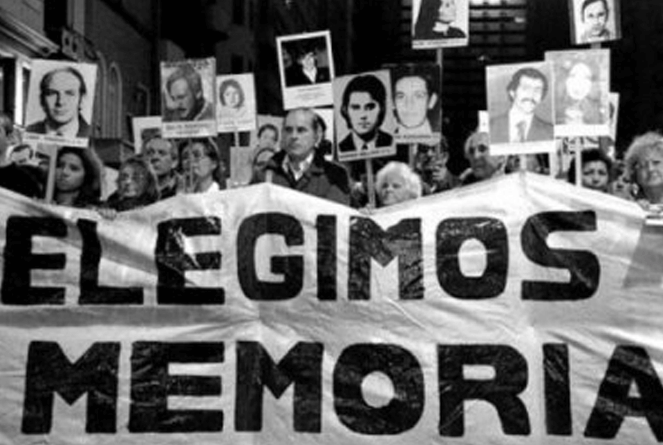

A excepción de la Liga Argentina por los Derechos del Hombre (LADH), que
existía
desde 1937, vinculada al Partido Comunista y heredera del Socorro Rojo Internacional, las
agrupaciones
que componen el movimiento de derechos humanos se formaron entre el gobierno de María Estela
Martínez de
Perón y los primeros años de la dictadura militar inciada en marzo de 1976. El Servicio Paz y
Justicia
(SERPAJ) se creó en 1974 como confluencia de diversos grupos comprometidos con la promoción de los
valores cristianos y la metodología de la acción no violenta. La Asamblea Permanente por los
Derechos
Humanos (APDH) a fines de 1975, nucleando un conjunto heterogéo de políticos e intelectuales
comprometidos en la denuncia de los secuestros y asesinatos. En esos mismos meses previos al golpe
de
Estado del 24 de marzo de 1976, se creó el Movimiento Ecuménico por los Derechos Humanos (MEDH)
vinculado al Consejo Mundial de Iglesias.
Ver más